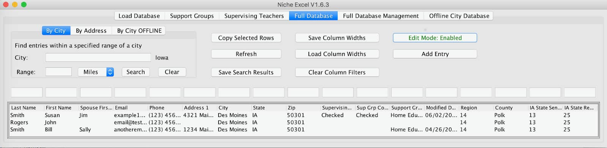

Niche Excel
Being a home-schooled student, my family is very connected with the Homeschool Iowa organization (also known as NICHE). Around 2016 I learned about a custom application that was written to manage a large excel file that contained information about members. This application serviced a few needs:
- Search for members located within a distance of a location
- Merge new information into the file without creating duplicates (prompting the user when necessary)
- Copy a summary of one or more rows to the clipboard
This application was written for Windows XP and failed to run on a modern Windows install. I never looked into why, given that the bigger problem was that it would never be able to run on OSX without using Parallels. Over the course of a few months I developed a replacement Java Swing application that would be able to run anywhere.
To perform the location search I used the Google GEO location API. Each row in the database would be looked up by their address to find their Lat/Lon. These could then be compared against the Lat/Lon of a search location with a little math. I also bundled the locations of all cities in Iowa so that queries could be performed even if the user had no internet connection.
Another interesting problem was keeping the application fast. I separated the steps of loading a database into pipeline stages. Multiple stages could be run simultaneously as long as one didn't depend on the other. The whole 8,000+ rows could be loaded in a few seconds.
One of the most challenging parts was designing everything to be robust against different permutations of a member's information. For example, a married couple might enter the order of their names differently year-to-year. The idea of equivalence had to be customizable per column. Since the organization uses the database as a mailing list, it was important to make sure that duplicates didn't accrue.
Having built this application before gaining any formal knowledge of Software Engineering there is a lot wrong with the design of this application. I used singletons where dependency injection would have been better suited and I didn't use the MVC nature of Swing correctly. It could also be argued that a proper database engine would be better, but I'm pretty sure an Excel file is best for the size of the organization. Still, since this application first started being used in 2016 and the only bug that has appeared was more of a problem with Swing that I had to circumvent.